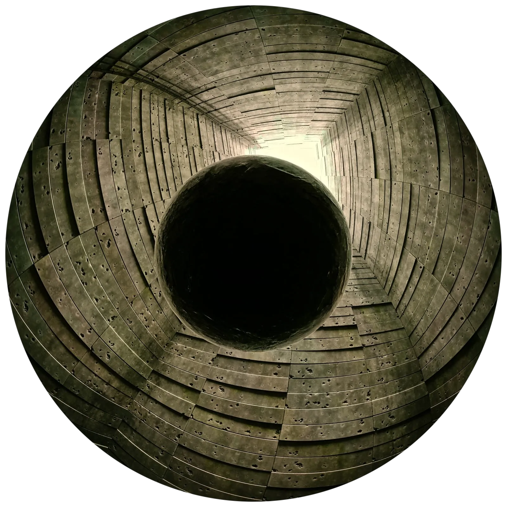
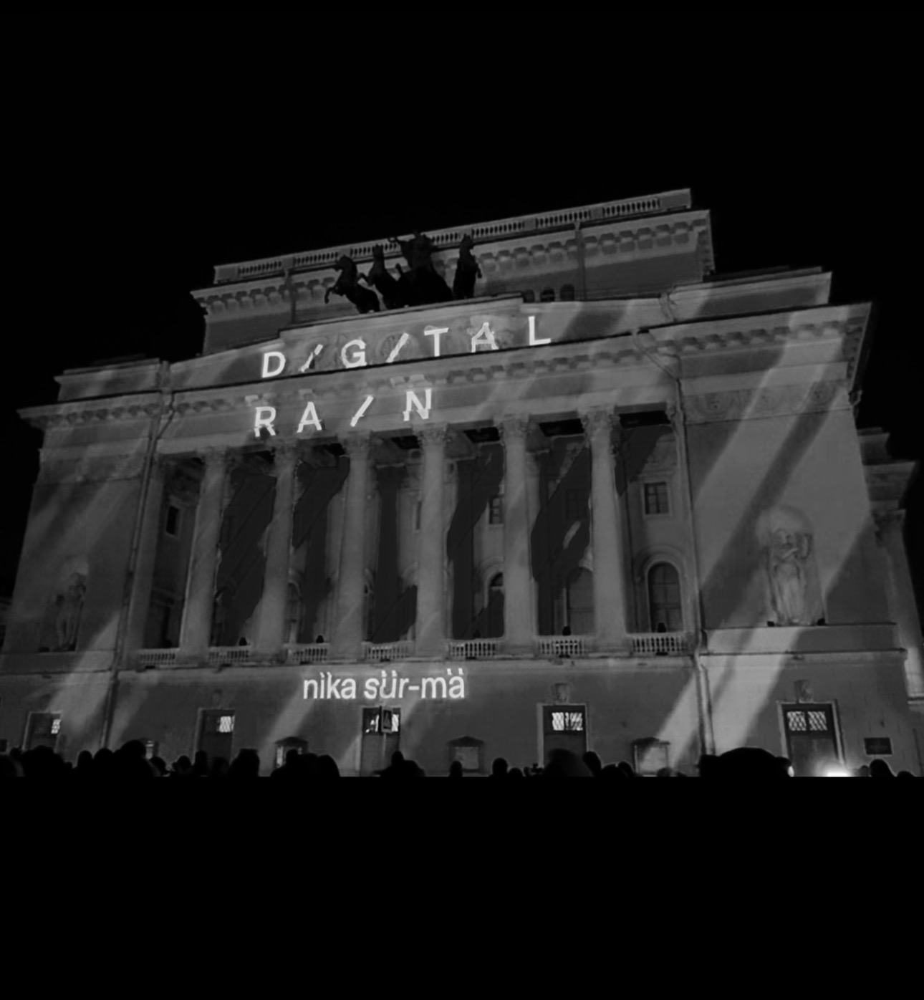
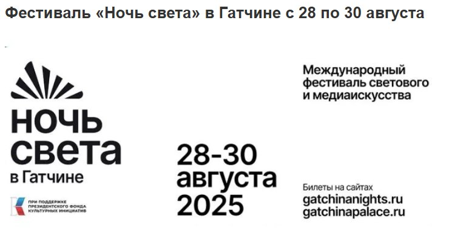
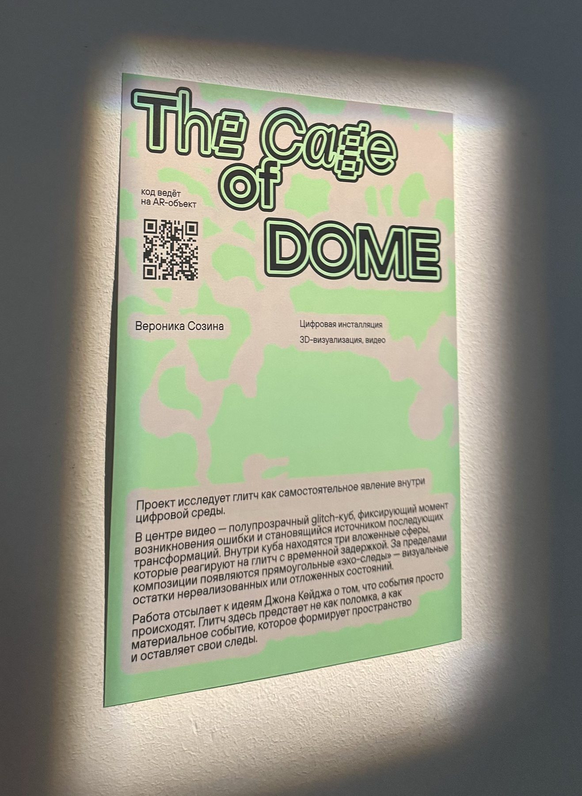
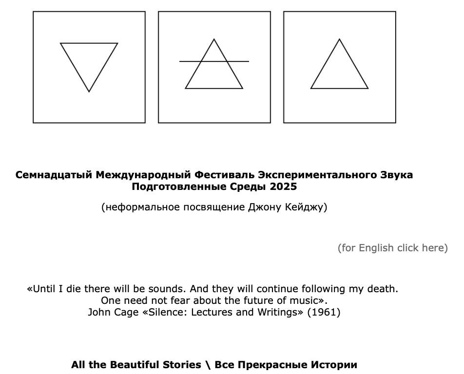
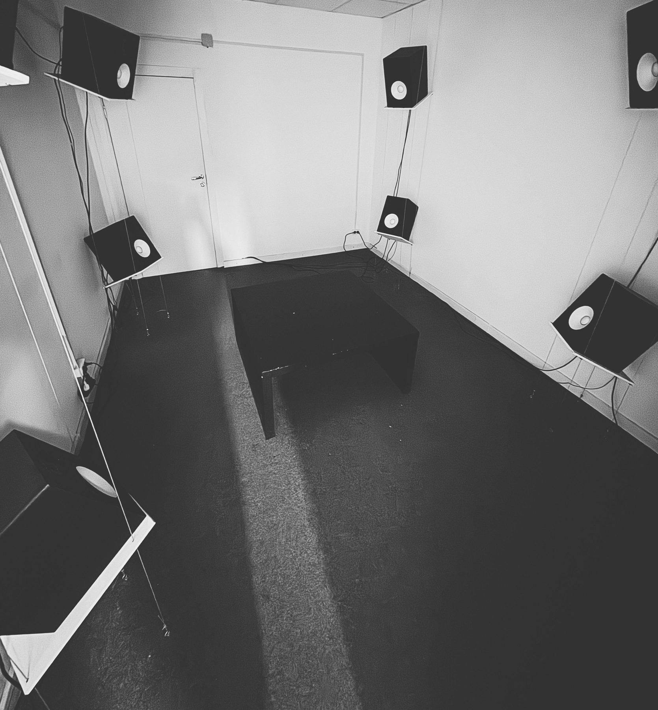
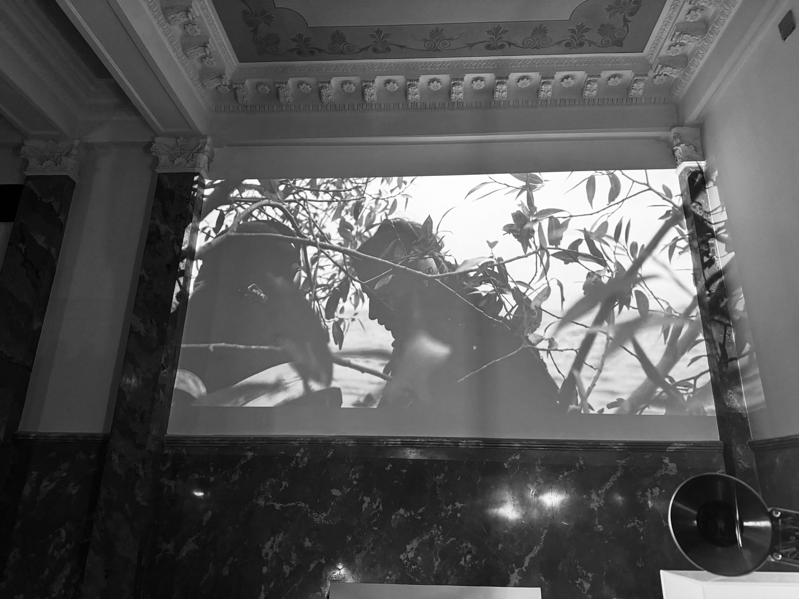
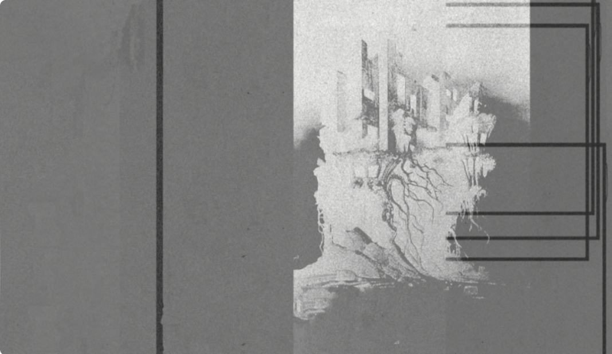

Fulldome filmКупольный фильм
City 15741Город 15741
Winner of the «City of the Future» dome projection competition at ДЕЛЬТА’n. A city kept in working order for no one. With Mike Iv and Pavel Gordeev.Победитель конкурса купольных проекций «Город будущего» фестиваля ДЕЛЬТА’n. Город, который поддерживается в порядке ни для кого. С Майком Ивом и Павлом Гордеевым.
view projectсмотреть проект
Projection mappingВидеомэппинг
synesthetic r(AI)nsynesthetic r(AI)n
Winner of the open call for 3D mapping on the façade of the Alexandrinsky Theatre. Digital Rain Festival, St. Petersburg, 2025.Победитель опен-колла на 3D-мэппинг фасада Александринского театра. Фестиваль медиаискусства D/G/TAL RA/N, Санкт-Петербург, 2025.
view projectсмотреть проект
Interactive theatre gameИнтерактивная театральная игра
Magic LanternВолшебный фонарь
Night of Light, Gatchina, 2025. Media art and sound design; music and animation.«Ночь света», Гатчина, 2025. Медиахудожница и саунд-дизайн; музыка и анимация.
view projectсмотреть проект
AR installationAR-инсталляция
The Cage of DOMEThe Cage of DOME
The glitch as an autonomous presence inside a digital environment. Glitching Environments, group exhibition, AIR ITMO, 2026.Глитч как автономное присутствие внутри цифровой среды. «Сбоящие среды», групповая выставка, AIR ITMO, 2026.
view projectсмотреть проект
Audiovisual storyАудиовизуальная история
ad(do)Or_e(a)Rrorad(do)Or_e(a)Rror
Selected for the special project of PS-2025: Stories in A/V. The story of the most adorable oak-like error in the network.Отобран в спец-проект ПС-2025 «Все прекрасные аудиовизуальные истории». История самой обаятельной дубоподобной ошибки в сети.
view projectсмотреть проект
8-channel audio installation8-канальная звуковая инсталляция
de[]construction of A(I)de[]construction of A(I)
Graduation work, Soundartist.ru. Krasnokholmskaya Gallery, Moscow, 22.07 — 07.09.2025.Дипломная работа, Soundartist.ru. Краснохолмская галерея, Москва, 22.07 — 07.09.2025.
view projectсмотреть проект
Sound artСаунд-арт
LEZ: Acoustic TraceЛЭЗ: Акустический след
Laboratory of Experimental Sound, Dom Radio. Modular synthesis, field recording, acoustic experimental composition.Лаборатория экспериментального звука, Дом радио. Модулярный синтез, полевые записи, акустическая экспериментальная композиция.
view projectсмотреть проект
Sound laboratoryЗвуковая лаборатория
Ivory Tower VIIБашня из слоновой кости VII
Sound production in sonic improvisation with experimental instruments from Dom Radio.Звуковое производство в звуковой импровизации на экспериментальных инструментах Дома радио.
view projectсмотреть проект